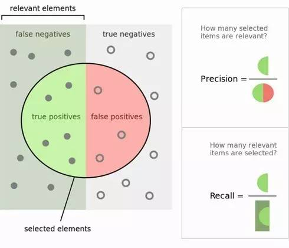

前置概念（TP, FP, TN, FN）
概念介绍
在了解精确率和召回率前，有几个概念需要了解
- TP（True Positives）：预测为正样本，实际也为正样本的特征的数量
- FP（False Positives）：预测为正样本，实际为负样本的特征的数量
- TN（True Negatives）：预测为负样本，实际也为负样本的特征的数量
- FN（False Negatives）：预测为负样本，实际为正样本的特征的数量
图像表示
图像如下所示，里面绿色的半圆就是TP(True Positives), 红色的半圆就是FP(False Positives), 左边的灰色长方形（不包括绿色半圆），就是FN（False Negatives）。右边的 浅灰色长方形（不包括红色半圆），就是TN(True Negatives)。这个绿色和红色组成的圆内代表我们分类得到模型结果认为是正值的样本。

精确率(precision),召回率(Recall)与特异性(specificity)
精确率
精确率（Precision）的定义：精确率是针对我们预测结果而言的，它表示的是预测为阳性的样本中有多少是真正的阳性。那么预测为正就有两种可能，一种就是把阳性预测为阳性(TP)，另一种就是把阴性预测为阳性(FP)。在上图可以看出，精确率就是绿色半圆除以红色绿色组成的圆。严格的数学定义如下：
召回率
召回率(Recall)的定义：召回率是针对我们原来的样本而言的，它表示的是样本中的阳性有多少被预测正确了。那也有两种可能，一种是把原来的阳性预测成阳性(TP)，另一种就是把原来的阳性预测为阴性(FN)。在上图能看出，召回率是绿色半圆除以左边的长方形。严格的数学定义如下：
精确率和召回率也被称为查准率和查全率。
查准率＝检索出的相关信息量 / 检索出的信息总量
查全率＝检索出的相关信息量 / 系统中的相关信息总量
特异性
特异性就是指应为阴性的样本有多少被成功预测了，具体数学定义为：
其它指标
$F_1$值
有时会用一个F1值来综合评估精确率和召回率，它是精确率和召回率的调和均值。当精确率和召回率都高时,F1值也会高。严格的数学定义如下：
灵敏度(true positive rate ,TPR)
灵敏度指所有实际阳性样本中，正确识别的正例比例，它和召回率的表达式相同。
假阳性率(false positive rate, FPR)
它是实际阴性样本中，被错误得识别为阳性的比例。严格的数学定义如下：
RoC曲线和PR曲线
根据上一节的一系列指标，可以做出两种不同的曲线，具体如下图：
RoC曲线
ROC的全名叫做Receiver Operating Characteristic，以TPR为y轴，以FPR为x轴，我们就直接得到了RoC曲线。从FPR和TPR的定义可以理解，TPR越高，FPR越小，我们的模型和算法就越高效。也就是画出来的RoC曲线越靠近左上越好。如上图所示。从几何的角度讲，RoC曲线下方的面积越大越大，则模型越优。所以有时候我们用RoC曲线下的面积，即AUC（Area Under Curve）值来作为算法和模型好坏的标准。通常，AUC的值介于0.5到1.0之间，较大的AUC代表了较好的性能。
RoC曲线中的一个点代表一个分类器，也就说一条RoC曲线代表了无数分类器。ROC曲线描述的其实是分类器性能随着分类器阈值的变化而变化的过程。对于ROC曲线，一个重要的特征是它的面积，面积为0.5为随机分类，识别能力为0，面积越接近于1识别能力越强，面积等于1为完全识别。这也就是上面提到的AUC。
PR曲线
以精确率为y轴，以召回率为x轴，我们就得到了PR曲线。仍然从精确率和召回率的定义可以理解，精确率越高，召回率越高，我们的模型和算法就越高效。也就是画出来的PR曲线越靠近右上越好。如上图右图所示。
If you like this blog or find it useful for you, you are welcome to comment on it. You are also welcome to share this blog, so that more people can participate in it. If the images used in the blog infringe your copyright, please contact the author to delete them. Thank you !